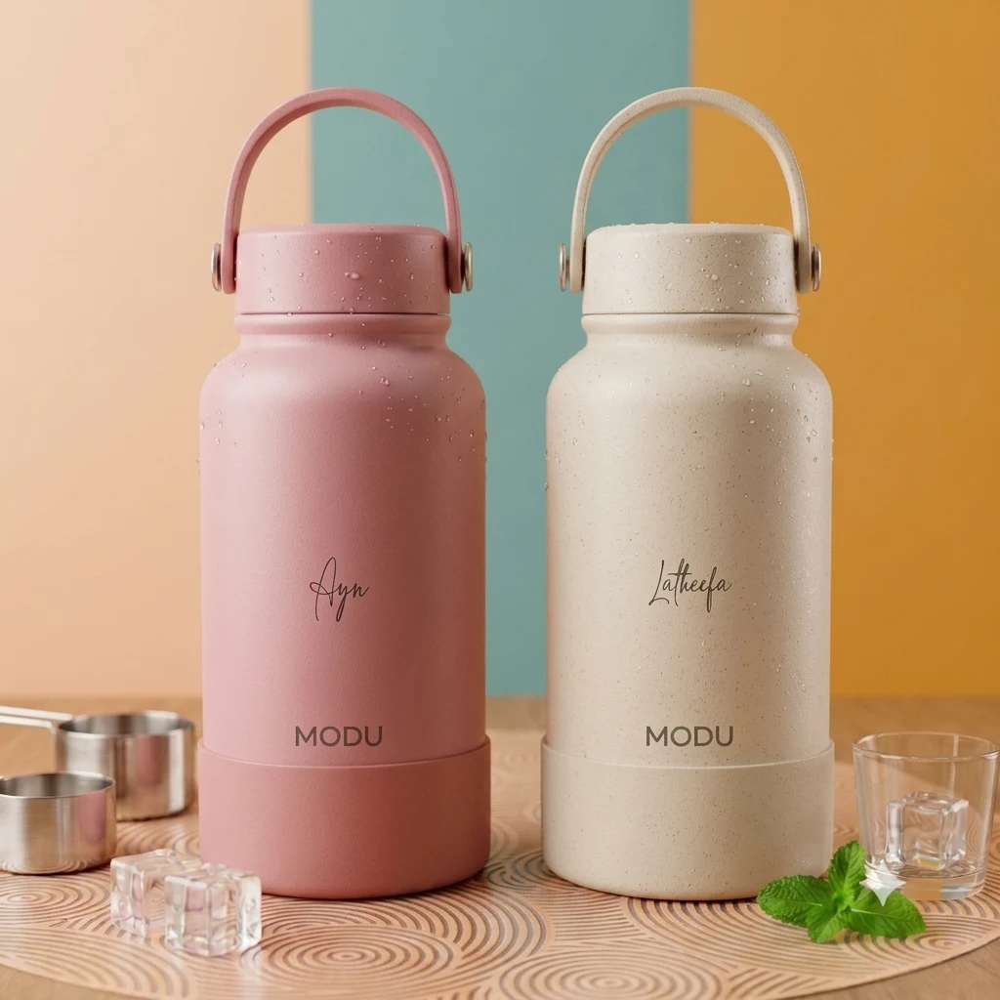
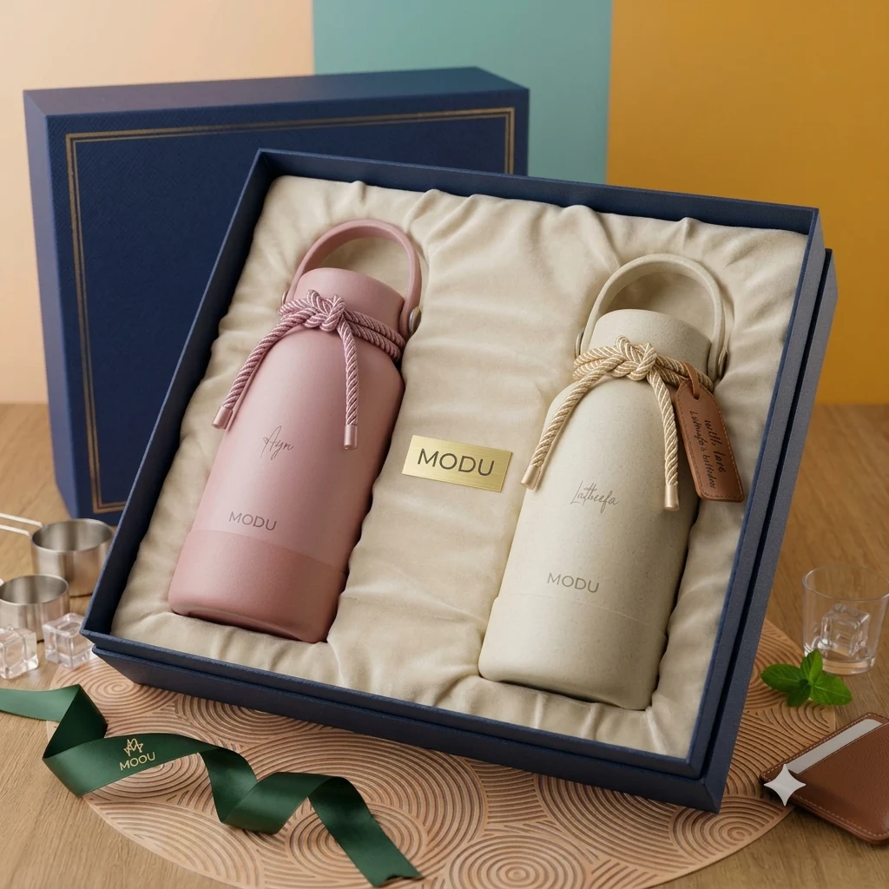
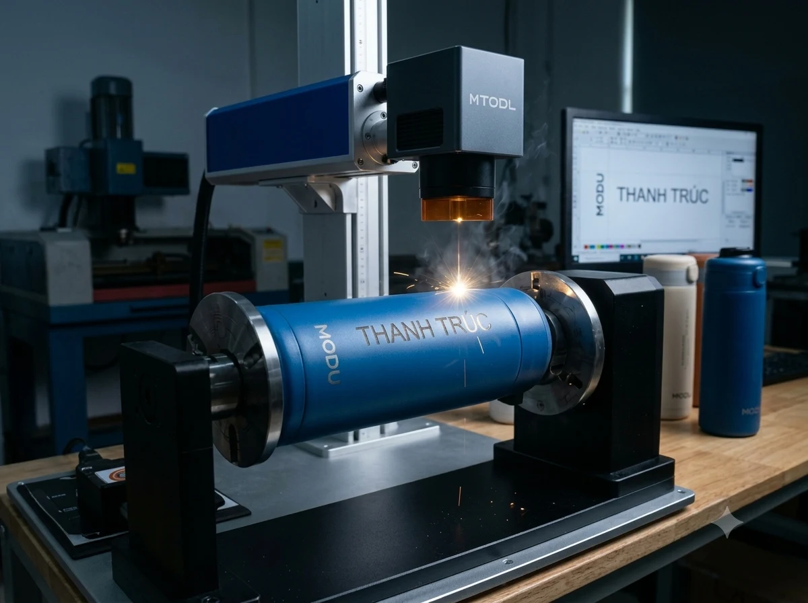

1. Vì sao bình giữ nhiệt khắc tên ngày càng được yêu thích?
Trong môi trường công sở, trường học hay phòng tập thể thao, bình nước cá nhân đã trở thành vật dụng quen thuộc. Tuy nhiên, việc nhiều người sử dụng những mẫu bình có kiểu dáng và màu sắc giống nhau đôi khi gây nhầm lẫn hoặc khó nhận diện đồ dùng.
Đây cũng là một trong những lý do khiến bình giữ nhiệt khắc tên ngày càng được quan tâm. Không chỉ giúp phân biệt vật dụng cá nhân, nội dung khắc còn tạo điểm nhấn riêng, thể hiện sở thích và phong cách của người sở hữu.
Với dịch vụ khắc tên theo yêu cầu, bạn có thể lựa chọn nhiều nội dung khác nhau để cá nhân hóa chiếc bình:
- Tên cá nhân, biệt danh: Giúp dễ dàng nhận diện bình nước và tạo dấu ấn riêng.
- Câu nói yêu thích: Lưu giữ một thông điệp tích cực hoặc lời nhắc nhở ý nghĩa mỗi ngày.
- Ngày kỷ niệm: Ghi lại những cột mốc đáng nhớ như ngày sinh nhật, ngày đặc biệt hoặc dấu mốc cá nhân.
- Biểu tượng, hình ảnh: Lựa chọn các họa tiết như trái tim, ngôi sao, cung hoàng đạo hoặc biểu tượng yêu thích để thể hiện cá tính.
Thay vì sử dụng một chiếc bình có thiết kế đại trà, bạn có thể chủ động lựa chọn nội dung và phong cách khắc phù hợp với sở thích của mình. Nhờ đó, một vật dụng quen thuộc trở nên đặc biệt hơn và mang giá trị cá nhân rõ nét.
2. Ưu điểm khi khắc chữ lên bình giữ nhiệt tại MODU

Không đơn thuần là hình thức trang trí, dịch vụ khắc chữ lên bình giữ nhiệt tại MODU mang đến nhiều lợi ích thiết thực:
2.1. Công nghệ laser sắc nét, bền đẹp
Khác với phương pháp in thông thường sử dụng lớp mực phủ trên bề mặt, công nghệ laser sử dụng tia laser để tạo nội dung trực tiếp trên bề mặt vật liệu. Phương pháp này cho phép thể hiện các chi tiết, ký tự và đường nét với độ chính xác cao.
Một ưu điểm của phương pháp khắc laser là nội dung không phụ thuộc vào một lớp mực in phủ bên ngoài nên hạn chế tình trạng bong tróc theo kiểu hình thức in thông thường. Nhờ đó, tên riêng, thông điệp hoặc biểu tượng được thể hiện rõ ràng, tạo điểm nhấn cho chiếc bình giữ nhiệt khắc tên mà vẫn giữ được phong cách thiết kế tổng thể.
2.2. Tùy chỉnh nội dung khắc theo sở thích
Một trong những điểm thú vị của bình giữ nhiệt khắc tên cá nhân hóa là bạn có thể chủ động lựa chọn nội dung thay vì giới hạn trong những mẫu thiết kế có sẵn. Khi sử dụng dịch vụ tại MODU Studio, bạn có thể tự do chọn font chữ thanh lịch, cá tính hay chữ ký nghệ thuật.
2.3. Tạo dấu ấn cá nhân cho vật dụng hằng ngày
Một chiếc bình giữ nhiệt khắc tên không chỉ giúp nhận diện đồ dùng mà còn thể hiện sự chỉn chu trong cách lựa chọn phụ kiện cá nhân. Thay vì sử dụng một sản phẩm giống với nhiều người khác, bạn có thể tạo điểm khác biệt bằng tên riêng, biệt danh hoặc biểu tượng yêu thích.
3. Bình giữ nhiệt khắc tên - Món quà ý nghĩa cho mọi dịp

Bên cạnh công dụng giữ nhiệt, một chiếc bình được cá nhân hóa còn là món quà thiết thực, thể hiện sự quan tâm đến người nhận. Bạn có thể lựa chọn sản phẩm trong nhiều dịp khác nhau:
3.1. Quà tặng bạn bè và người thân
Một chiếc bình giữ nhiệt khắc tên hoặc biệt danh kèm lời chúc ngắn sẽ giúp món quà sinh nhật, Giáng sinh hay kỷ niệm trở nên đặc biệt hơn. Người nhận có thể sử dụng hằng ngày và lưu giữ như một món quà đáng nhớ.
3.2. Quà tặng đồng nghiệp
Bình giữ nhiệt là vật dụng hữu ích trong môi trường làm việc. Việc khắc tên riêng giúp món quà trở nên tinh tế, chỉn chu và phù hợp với nhiều đối tượng.
3.3. Quà tặng doanh nghiệp và sự kiện
Doanh nghiệp có thể lựa chọn khắc logo thương hiệu kết hợp tên người nhận để làm quà tặng khách hàng, nhân viên hoặc đối tác. Đây là cách tạo dấu ấn thương hiệu thông qua một sản phẩm thiết thực, có khả năng đồng hành cùng người nhận trong cuộc sống hằng ngày.
4. Quy trình đặt khắc tên lên bình giữ nhiệt tại MODU

Để sở hữu một chiếc bình mang dấu ấn riêng, khách hàng có thể thực hiện theo 4 bước đơn giản:
- Bước 1 - Lựa chọn mẫu bình: Tham khảo các mẫu bình giữ nhiệt MODU và lựa chọn dung tích, màu sắc, kiểu dáng phù hợp với nhu cầu.
- Bước 2 - Gửi nội dung cần khắc: Cung cấp tên riêng, biệt danh, câu nói hoặc biểu tượng mong muốn. Bạn cũng có thể trao đổi về font chữ và phong cách thiết kế.
- Bước 3 - Duyệt bản thiết kế: MODU hỗ trợ mô phỏng nội dung và vị trí khắc để khách hàng kiểm tra trước khi gia công.
- Bước 4 - Gia công và giao hàng: Sau khi thống nhất thiết kế, sản phẩm được tiến hành khắc laser, kiểm tra và đóng gói trước khi giao đến khách hàng.
Quy trình này giúp khách hàng chủ động kiểm tra nội dung cá nhân hóa, hạn chế sai sót và có được sản phẩm đúng với mong muốn.
5. Gợi ý decor bình giữ nhiệt thêm nổi bật cùng MODU
Sau khi sở hữu một chiếc bình giữ nhiệt mang tên riêng, bạn hoàn toàn có thể sáng tạo thêm để sản phẩm trở nên bắt mắt và thể hiện cá tính rõ nét hơn.
Bên cạnh việc khắc tên, trang trí bằng charm, phụ kiện treo bình hoặc túi mù cũng là những ý tưởng thú vị. Sự kết hợp giữa màu sắc bình và phụ kiện phù hợp sẽ tạo nên phong cách riêng, giúp chiếc bình trở thành món đồ đồng hành nổi bật mỗi ngày.
Khám phá thêm những ý tưởng trang trí độc đáo tại bài viết: Bắt trend decor bình giữ nhiệt cực xinh với túi mù charm từ MODU.
6. Câu hỏi thường gặp
Bình giữ nhiệt khắc tên có bị phai sau thời gian sử dụng không?
Công nghệ khắc laser tác động trực tiếp lên bề mặt vật liệu nên nội dung khắc có độ bền cao, không dễ bong tróc như lớp mực in thông thường.
Có thể yêu cầu khắc nội dung theo ý thích không?
Có. Bạn có thể lựa chọn tên riêng, biệt danh, ngày kỷ niệm, câu nói yêu thích hoặc biểu tượng theo sở thích cá nhân. MODU sẽ hỗ trợ kiểm tra khả năng thể hiện nội dung trên mẫu bình đã chọn.
Có thể khắc logo công ty lên bình giữ nhiệt không?
Có. Ngoài nội dung cá nhân, khách hàng có thể yêu cầu khắc logo doanh nghiệp, tên thương hiệu hoặc thông điệp sự kiện để sử dụng làm quà tặng nhân viên, khách hàng và đối tác.
Có được xem trước thiết kế trước khi khắc không?
Có. Khách hàng có thể trao đổi nội dung, font chữ và vị trí khắc để nhận bản mô phỏng, kiểm tra và thống nhất trước khi tiến hành gia công.
Đặt bình giữ nhiệt khắc tên tại MODU mất bao lâu?
Thời gian hoàn thiện phụ thuộc vào số lượng sản phẩm, độ phức tạp của thiết kế và lịch gia công. Bạn nên liên hệ MODU để được tư vấn thời gian cụ thể.
7. Kết luận
Một chiếc bình giữ nhiệt khắc tên không chỉ là vật dụng đựng nước mà còn thể hiện phong cách và dấu ấn cá nhân của người sở hữu. Với dịch vụ cá nhân hóa tại MODU, bạn có thể tự do lựa chọn nội dung khắc, biến sản phẩm quen thuộc thành món đồ mang ý nghĩa riêng.
Hãy khám phá các mẫu bình giữ nhiệt tại MODU và lựa chọn thiết kế phù hợp để tạo nên dấu ấn của riêng mình!


Bình luận & Thắc mắc (0)
Để lại câu hỏi của bạn bên dưới. Bạn chỉ cần điền Tên và Gmail, bình luận sẽ được lưu ngay vào cơ sở dữ liệu hệ thống!